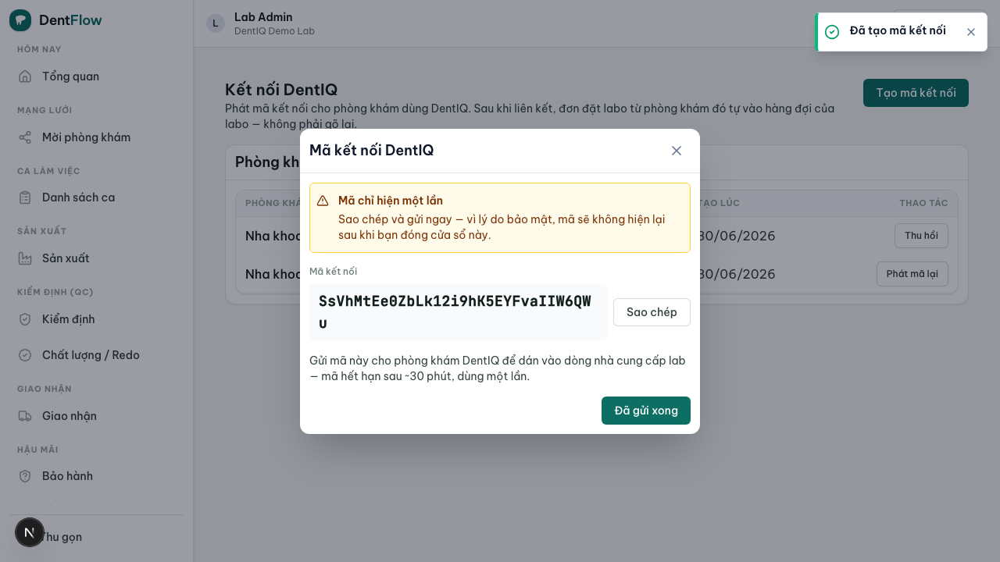

Đặt đơn qua DentIQ
Phòng khám dùng DentIQ đặt đơn — phiếu tự chảy sang labo, không ai gõ lại.
Phòng khám dùng phần mềm DentIQ tạo phiếu đặt labo ngay trong DentIQ; phiếu đó tự xuất hiện trong hàng đợi case của labo trên DentIQ Lab — không ai phải gõ lại. Trạng thái sản xuất của labo tự đồng bộ ngược về DentIQ, để phòng khám thấy trạng thái thật thay vì tự đoán. Đây là kênh nhập liệu thứ hai, song song với đặt đơn không cài (QR/web).

Vì sao dùng: hết double-entry
Hôm nay, một phòng khám dùng DentIQ tạo phiếu lab order trong DentIQ, rồi gõ lại sang Zalo để phiếu thực sự tới labo → nhập đôi, lệch dữ liệu. DentIQ cũng tự đoán trạng thái đã nhận / hoàn thành vì không có tín hiệu từ labo. DentIQ Lab là "đầu bên kia" còn thiếu: nối hai bên xoá bỏ nhập đôi và thay phần đoán bằng trạng thái thật.
- Không nhập đôi — lab order gửi tới provider đã link tự thành case
submittedở labo. - Trạng thái thật — labo
acceptedchiếu ngược về DentIQ thành RECEIVED; không còn đoán. - Một case, một hàng đợi — case DentIQ-connected chạy giống hệt case kênh khác, không có hàng đợi riêng.
Cách tạo link kết nối
Liên kết một provider DentIQ với labo chỉ thành lập qua mã kết nối hai chiều — không bên nào tự ý link bên kia:
- Chủ labo mở màn Kết nối phòng khám DentIQ (settings phía labo) và bấm Tạo mã kết nối.
- Hệ thống sinh một mã / QR (lab link). Labo copy hoặc chia sẻ mã cho phòng khám.
- Admin phía clinic dán mã vào provider trong DentIQ → trạng thái chuyển "Đã liên kết".
- Từ đó, mọi lab order gửi tới provider đã link tự vào hàng đợi labo; trạng thái chiếu ngược về DentIQ.
Mã sai/hết hạn khi clinic dán vào → báo lỗi rõ ở phía DentIQ, không tạo lab link treo; labo không thấy gì.

Chỉ thêm, không phá cái đang chạy
- Partial adoption — phòng khám có thể link một số provider, để một số không link; provider chưa link hành xử đúng như DentIQ hôm nay (trạng thái thủ công), không hồi quy.
- Standalone không bao giờ vỡ — labo không có phòng khám DentIQ nào vẫn dùng DentIQ Lab đầy đủ qua đặt đơn không cài.
- Cả hai kênh cùng lúc — labo nhận case từ cả connectionless và DentIQ-connected; chọn kênh là việc của phòng khám, trong suốt với vận hành labo.
- Hủy link an toàn — hủy link không xoá case đã đồng bộ; case đang chạy tiếp tục, đơn mới từ provider đó quay về hành vi thủ công.
Case DentIQ-connected và case kênh khác đổ về một hàng đợi hợp nhất phía labo — chỉ thêm nhãn nguồn "DentIQ", không có màn riêng theo kênh. Hàng đợi này thuộc Hàng đợi & phân công.